Это только макеты: код сайта не менялся. Все надписи и блоки взяты с живого сайта, меняются только порядок, размер, шрифты и отступы. Ширина экрана — как у iPhone (390 пикселей). «Как сейчас» — настоящие снимки живого сайта в версии Жени (Chromium, 390×844).
Во всех вариантах карточки кнопка «В гараж» стоит на первом экране (в вариантах 1–3 рядом с ценой, в варианте 4 — на фото). Сейчас она в самом низу карточки: с карточки в гараж ставят 0,2 % мобильных посетителей против 7,2 % на компьютере.
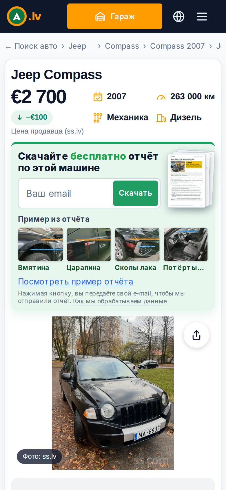
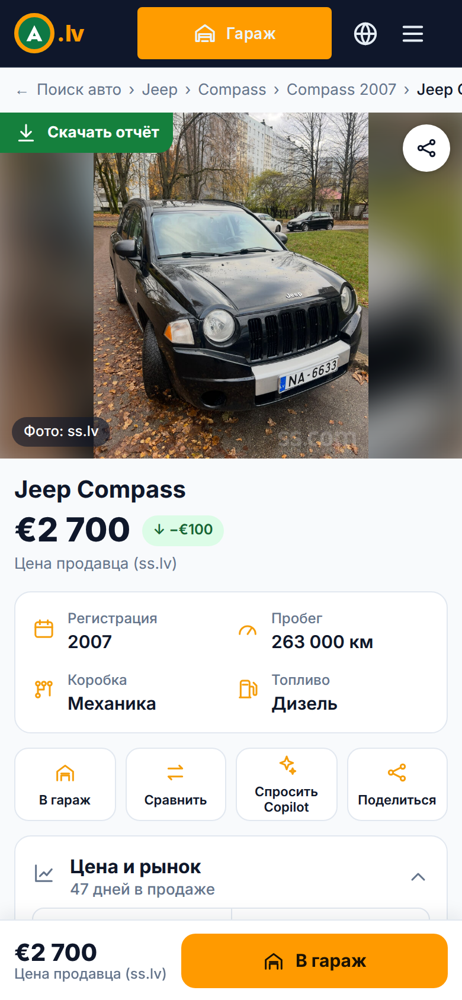
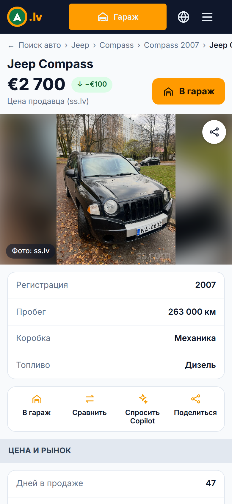
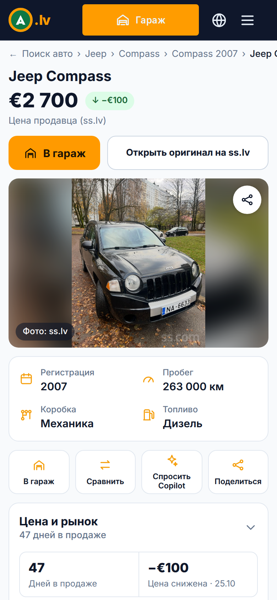
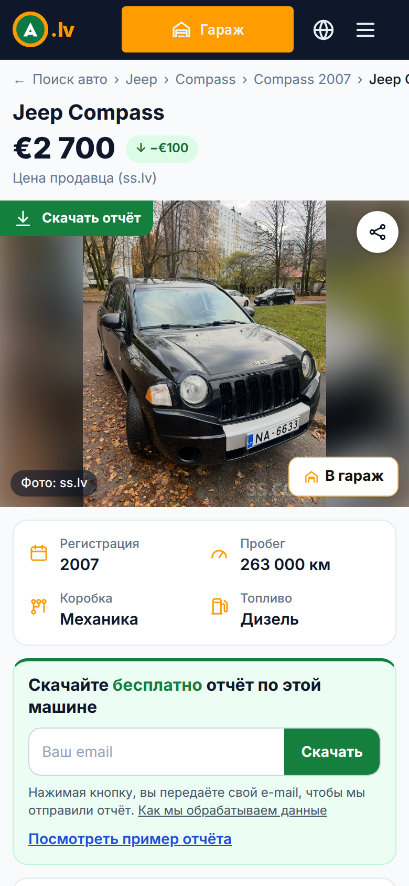
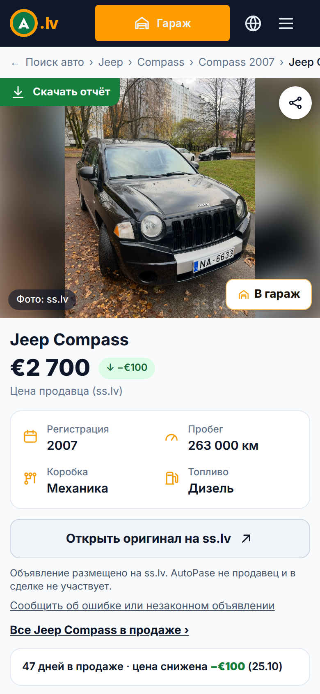
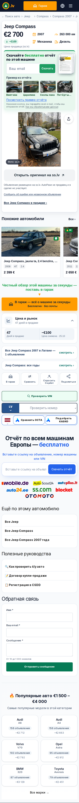
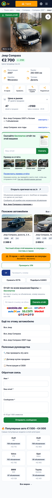
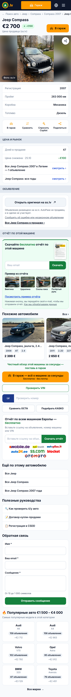
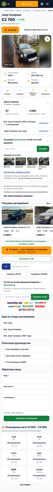
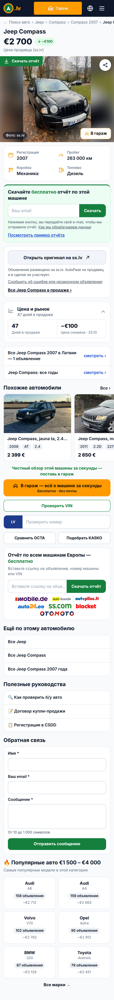
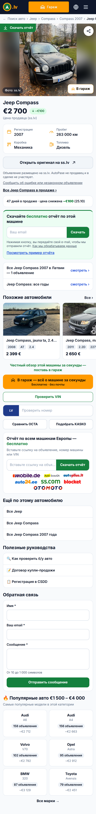
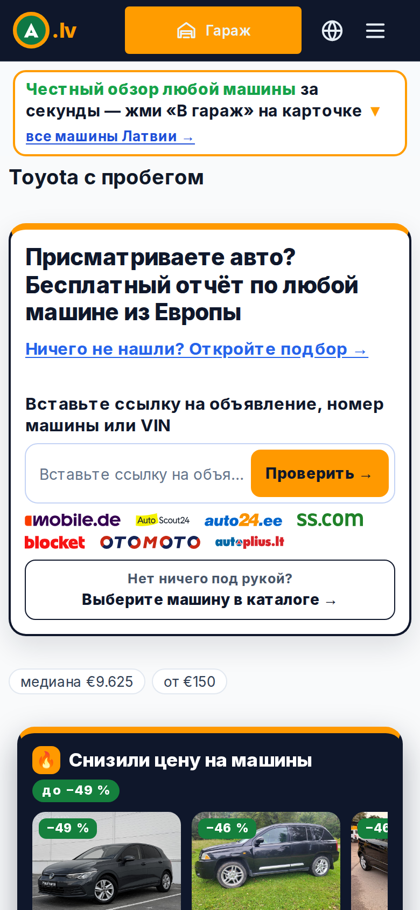
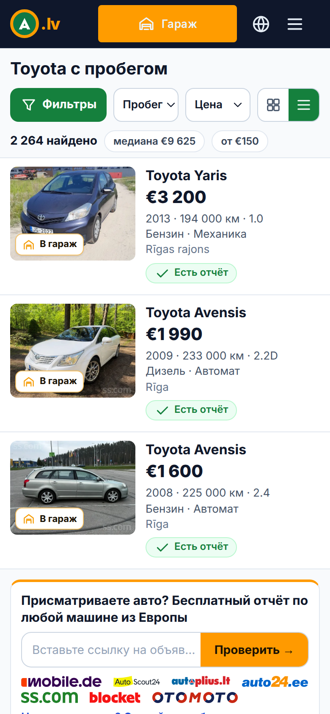
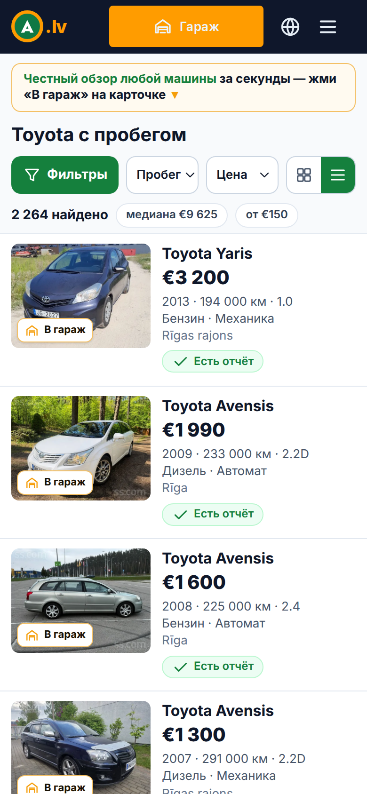
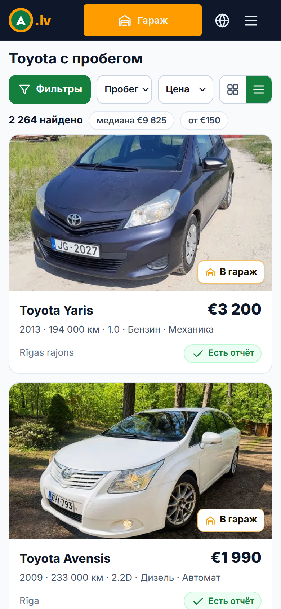
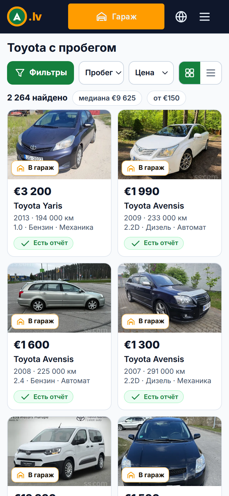
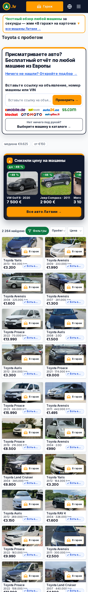
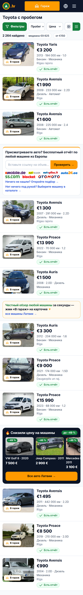
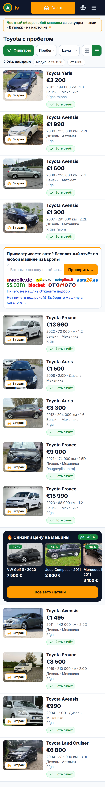
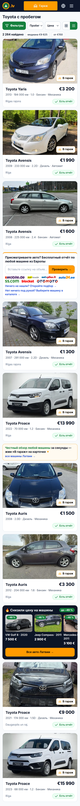
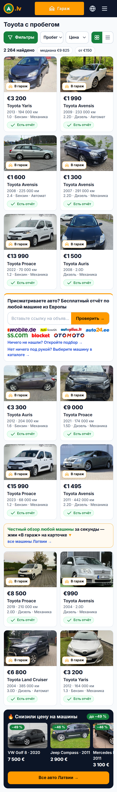
Блок «не нашли авто» понят как «Присматриваете авто? … Ничего не нашли? Откройте подбор →»: во всех вариантах он уменьшен примерно вдвое и стоит после 2–3-го ряда. В макетах везде единый вид цены (€3 200, как на карточке), «км» вместо «km», один набор размеров шрифта (20 / 16 / 14 / 12).